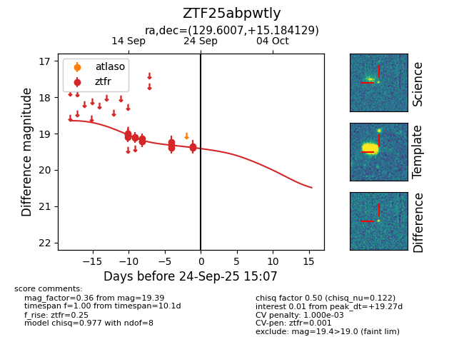
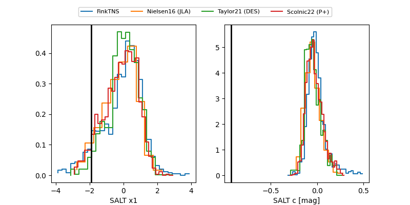

FINK: ZTF25abpwtly
Lasair: ZTF25abpwtly
ALeRCE: ZTF25abpwtly
ZTF25abpwtly (ztf,fink)
equatorial (ra, dec) = (129.6007,+15.18413)
galactic (l, b) = (210.6001,+30.39189)


last ztfr=19.39
13 ztfr detections